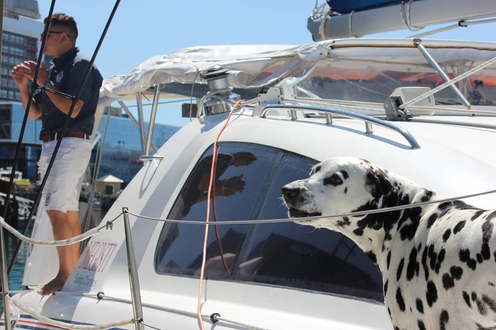

Intro

Kia ora ko Matthew Brown toku ingoa. Nau mai ki taku hinengaro. i konei ka kitea e koe aku mahi auaha katoa.
Hi, my name is Matthew Brown. Welcome to my mind. Here you will find all my creative work. For years I have always been inspired by the creativity this world offers and
have been fascinated on how I can tell my creative story and ideas.
I have studied different forms of visual media for over 2 and a half years trying to express my creative self and be inspired by others.
Media I have studied: Photography, Film, Graphic Design and Web & UX Design. And in this portfolio I have
the privilege to showcase what I have been studying over the years.
Web Design

I studied web design for 1 and a half years. Over the course of my experience I absolutely
love Web design and all that it offers. The ability to create what ever I imagine fascinates me.
The feeling of fixing a problem or completing a challenge is the best feeling in the world
"Ladera Heights Project"

The Ladera height sproject was one that I loved. First expirementing with bootstrap and flexbox it
was both a challenge and a great oppurtunity to learn about other styles of web building.
"The Last Dance"

We all start somewhere. The Last Dance website. (a website dedicated to the Netflix show) was the first
full functioning website I had ever created and looking back on it now I am still proud on how it turned out
regarding my knowledge of web design
"Project Haerenga"

My first experience with Javascript. This website was all about the user creating data
and having the website respond to the data. This was my first true challenge but the most rewarding.
"ZIP Group Application"
.png)
This website was definitely the most challeging as it was my first experience with servers , and databases and true
fullstack web development. It was a real challenge but overall was a neccersary proccess
Gallery

"Man's best friend" The ability to capture the enviroment around me has always intrigued me. Though I do not have a lot of
photography experience it would be such an enjoyful hobbie and a great activity to get into.
"Voyager" The stories a photo can tell are extroadinary. The ability photos have
to create a story in the mind of whoever looks at them can not be replicated and that fascinates me.

"Earth Style" To shine light on things we take for granted can only be done by photographs
and that what we walk pass every day without giving a passing glance can be revived by the ability to capture
them forever.
Graphic Design
"Cactus Jack"


Though I do not have much experience with graphic design I have absolutely enjoyed it. To create anything I can
and portray it in a way in which everyone can see and enjoy makes me want to do it more.
These basic posters I created are with Photoshop, an application I have yet to master but absolutely love to do so.
Creating mockups and seeing my artwork in a place where others can enjoy them is what motivats me the most.
"Ray Gun"


Creating something that others can enjoy, talk and think about is all what graphic design is about.
This box I designed was the first hands-on experience I had ever had with physical graphic desgin.
But over all was a fun experience and was one that I knew was something I needed to master.
"Art"


Basic Polygon art I created with Adobe Illustrator. These aren't meant to be anything but a fun personal project.
I enjoy art. To me there is no such thing as bad art or good art. art is the ability to convey a message or to
express yourself visually...Or just something you find cool to look at.
About Me

My name is Matthew Brown. I am from Taumarunui, New Zealand but have started my creative Journey in the NZ capital of Wellington
I love all things sports. Mostly NBA and NFL and am a huge fan of Music. I enjoy talking and debating about sports topics and learning about new genres of music and literature.
I love learning about different cultures and traditions and would love to travel around the world.
I enjoy talking to people about almost everything and learning about others artistic visions.
If i were to describe myself. I'm a fun guy, Love to socialize with others but also love to have time to myself and just enjoy some video games and films.
Contact